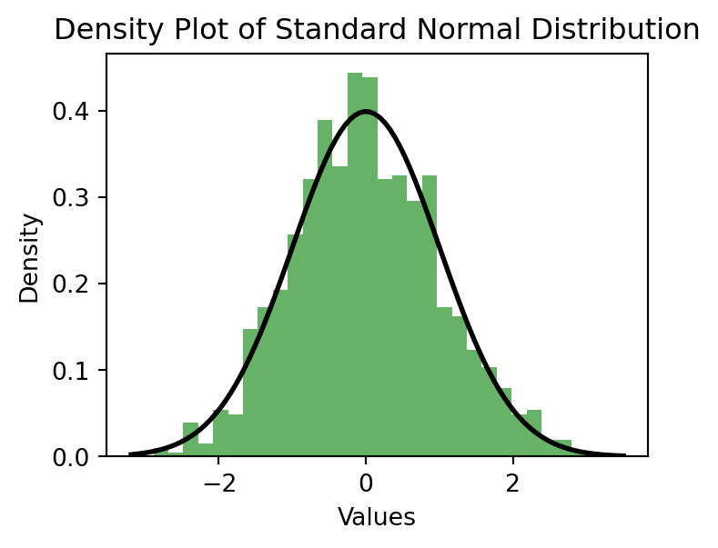
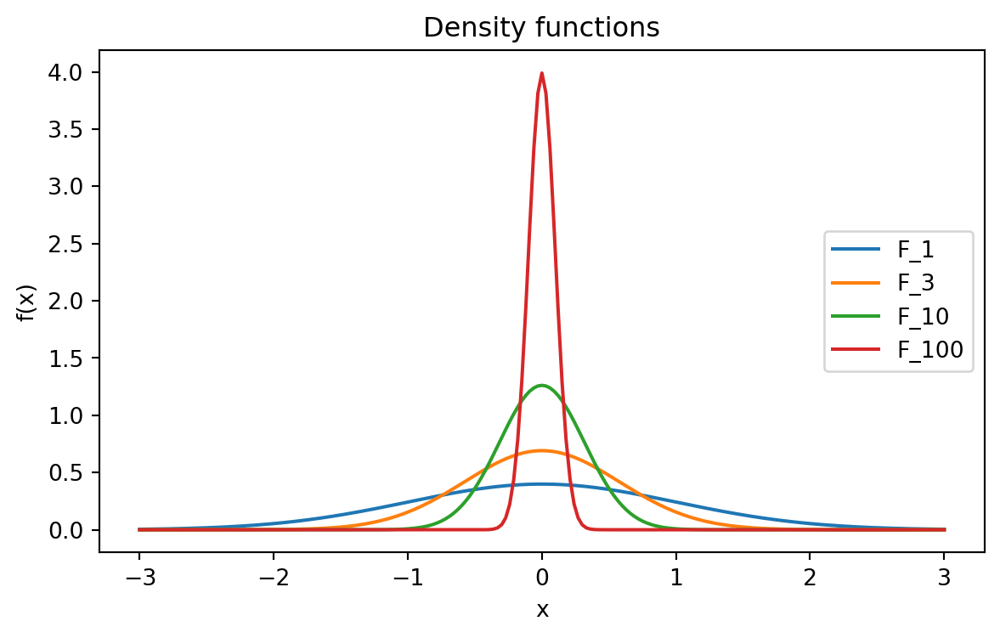
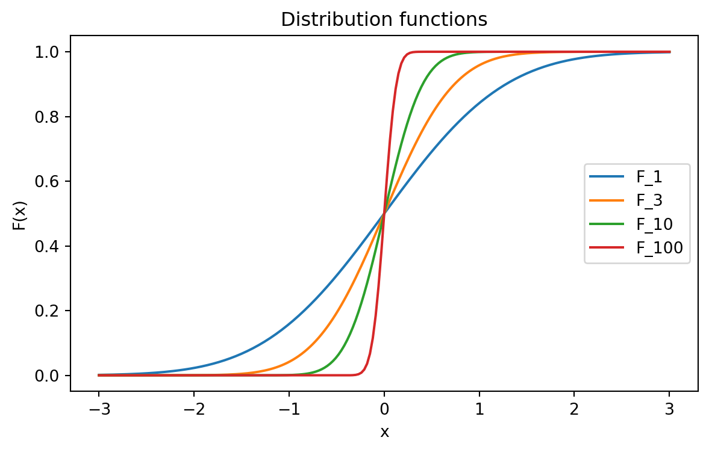
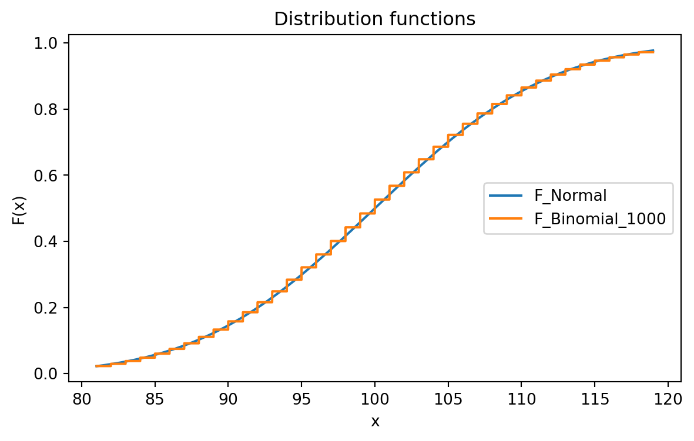
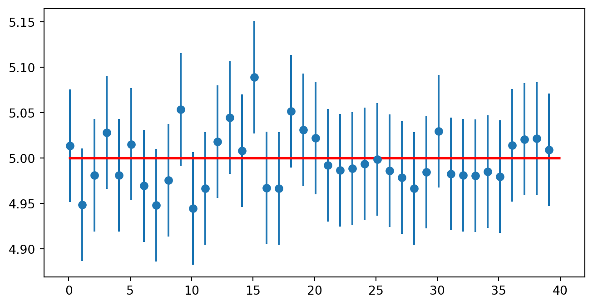
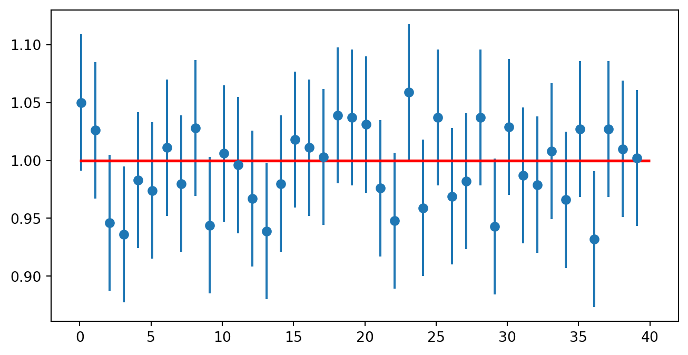
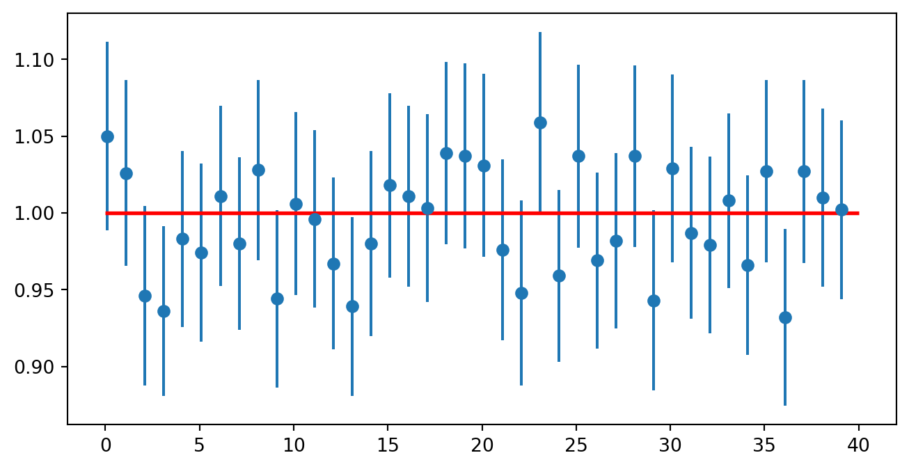

0.9152949019822718
0.08020395899785959
0.6561996976012695
0.7235724460815871
0.06752088902122921
0.491003309340016
0.05857663489707554
0.6492084549788051
0.5484524803626224
0.4961405538397724Lecture 2: Basics of Statistics
Topics in Econometrics and Data Science
Prof. Dr. Jannis Kück
\(\newcommand{\E}{{\mathbb{E}}}\) \(\newcommand{\N}{{\mathbb{N}}}\) \(\newcommand{\R}{{\mathbb{R}}}\)
\(\newcommand{\nto}{\xrightarrow[n\to\infty]{}}\) \(\newcommand{\Dto}{\xrightarrow[]{d}}\) \(\newcommand{\Pto}{\xrightarrow[]{P}}\) \(\newcommand{\asto}{\xrightarrow[]{a.s.}}\) \(\newcommand{\Lto}{\xrightarrow[]{\mathcal{L}_2}}\)
Part II: Basics of Statistics
Outlook
- Probability theory and random variables
- Random numbers in Python
- Convergence of random variables
- Point estimation and confidence intervals
- Hypothesis testing
Probability Theory
In the following, let \(\Omega\) denote the sample space with elements \(\omega\in\Omega\) and events \(A\subset\Omega\). In this short introduction we will pass over the definiton of sigma-fields and assume implicitly the measurability of all sets we consider.
Probability Measure
A function \(P\) with the following properties
\(P(A)\ge 0\ \forall A\subset\Omega\),
\(P(\Omega)=1\),
For pairwise disjoint sets \(A_1,A_2,\dots\) it holds \[P\left(\cup_{i=1}^\infty A_i\right)=\sum\limits_{i=1}^\infty P(A_i)\]
is called probability measure.
Random Variables
Let \((\Omega, P)\) a probability space. A (univariate) random variable is a map \(X:\Omega\rightarrow\mathbb{R}\) with \[\omega\mapsto x.\]
Cumulative distribution function
The cumulative distribution function (cdf) \(F\) of a random variable \(X\) is defined by
\[F_X(x)=P(X\le x).\]
Discrete random variables
A random variable \(X\) is called discrete if the image of \(X\) is finite or countably infinite. The probability mass function (pmf) of a discrete random variable is defined as
\[f_X(x)=P(X=x).\]
Random Variables
Continuous random variables
A random variable \(X\) is called continuous if the image of \(X\) is uncountably infinite. Further a random variable \(X\) is called absolutely continuous if there is a function \(f_X\) with the following properties:
\(f_X(x)\ge 0\ \forall x\),
\(\int\limits_\mathbb{R} f_X(x)dx=1\),
For all \(a\le b\), it holds \[P(a\le X \le b)=\int\limits_{a}^b f_X(x)dx.\]
The function \(f_X\) is called probability density function (pdf).
Parameters of Distributions
Mean
The mean of a random variable \(X\) is defined as
\[\begin{align*} E[X]=\int x dF(x)=\begin{cases}=\sum\limits_x xf(x)\quad\text{(X discrete)}\\=\int\limits_x xf(x)dx\quad\text{(X continuous)}\end{cases} \end{align*}\] iff \(\int |x| dF(x)<\infty\) exists.
Variance
Let \(X\) be a random variable with mean \(E[X]\). The variance of \(X\) is defined by
\[\begin{align*} Var(X) := E[(X − E[X])^2]. \end{align*}\]
The standard deviation is defined by \(sd(X):=\sqrt{Var(X)}\).
Parameters of Distributions
Quantiles
The \(u\)-quantile of a random variable \(X\) with distribution \(F_X\) is definded by
\[q_X(u) = F_X^{-1}(u):=\inf\{x : F_X(x)\ge u\}.\]
Descriptive Statistics
In the following, let \(S=(X_1,\dots,X_n)\) be a given sample of size \(n\). In most cases, we will assume that \(S\) consists of \(n\) independent observations of a random variable \(X\) with distribution \(F\).
Notation: \(X_1\dots,X_n\) i.i.d. \(\sim F\)
Sample mean and empirical variance
Let \((X_1,\dots,X_n)\) be a given sample of size \(n\). The sample mean is definied as
\[E_n[X]=\bar{X}_n:=\frac{1}{n}\sum\limits_{i=1}X_i\]
and the empirical variance as
\[Var_n(X):=\frac{1}{n}\sum\limits_{i=1}(X_i-\bar{X}_n)^2.\]
Descriptive Statistics
The empirical distribution function
Let \((X_1,\dots,X_n)\) be a given sample of size \(n\). The empirical distribution function \(\hat{F}_n:\mathbb{R}\rightarrow [0,1]\) is definied as \[\hat{F}_n(x)=\frac{1}{n}\sum\limits_{i=1}^nI(X_i\le x).\]
Random Numbers in Python
In statistics, it is common to use simulation studies to show empirically that a proposed estimation method works well (for example in small samples or under certain distribution assumptions). Assume that you want to generate random observations
\[X_1,\dots,X_n\sim F.\] It holds \[ \begin{align*} U\sim \mathcal{U}([0,1])\implies X:=F^{-1}(U)\sim F \end{align*} \]
Random Numbers in Python
We can generate random observations of an arbitrary distribution \(F\) by simulating random numbers \(U_1,\dots,U_n\sim \mathcal{U}([0,1])\).
The random module provides functions that generate pseudorandom numbers. Among others, random includes the function random that returns a random float between \(0.0\) and \(1.0\) (In fact, it returns an random observation of U):
Random Numbers in Python
The function randint takes parameters low and high and returns an integer between them (including both!).
To choose an element from a given set of values at random, you can use the function choice
Random Numbers in Python
Examples
- Coin flip (“Heads or Tails”)
- “Roll the dice”
- Normal distribution
Random Numbers in Python
Coin flip
\(X\sim\mathcal{U}(\{0, 1\})\), hence
\[\begin{align} P(X=x)=\begin{cases}\frac{1}{2}\ \text{if}\ x=0\\ \frac{1}{2}\ \text{if}\ x=1\end{cases}. \end{align} \]
Random Numbers in Python
Coin flip
Random Numbers in Python
“Roll the dice”
\(X\sim \mathcal{U}(\{1,2,3,4,5,6\})\). Hence \[E[X]=\sum\limits_x x f(x)=\frac{1}{6}(1+2+3+4+5+6)=\frac{1}{6}\frac{6(6+1)}{2}=3.5.\]
Random Numbers in Python
“Roll the dice”
Random Numbers in Python
“Roll the dice”
Random Numbers in Python
Normal distribution
Let \(X\sim\mathcal{N}(0,1)\) be standard normal distributed.
Random Numbers in Python
Normal distribution
Note that \(F(0)=P(X\le 0)=1/2\).
Random Numbers in Python
Normal distribution
Random Numbers in Python
Normal distribution
Code
import numpy as np
from scipy import stats
import matplotlib.pyplot as plt
# Generate random data from standard normal distribution
data = np.random.normal(loc=0, scale=1, size=1000)
# Create density plot
plt.figure(figsize=(4, 3))
plt.hist(data, bins=30, density=True, alpha=0.6, color='g')
# Plot the probability density function (PDF) of the standard normal distribution
xmin, xmax = plt.xlim()
x = np.linspace(xmin, xmax, 100)
p = stats.norm.pdf(x)
plt.plot(x, p, 'k', linewidth=2)
plt.title('Density Plot of Standard Normal Distribution')
plt.xlabel('Values')
plt.ylabel('Density')
plt.show()
Convergence of Random Variables
Convergence of Random Variables
Let \((x_n)_{n\in\mathbb{N}}\) be a sequence of numbers with \(x_i\in\R\).
Definition: \((x_n)_{n\in\mathbb{N}}\) converges towards \(x\in\R\) \((\lim\limits_{n\to\infty}x_n=x)\) \[\Leftrightarrow\forall\varepsilon>0\ \exists n\in\N\ \forall m\ge n :|x_m-x|<\varepsilon.\]
Convergence of Random Variables
Problem
Let \(X_i\sim\mathcal{N}(0,1)\) i.i.d.
We do not have \(\lim\limits_{n \to\infty} X_n =X\sim\mathcal{N}(0,1)\), since for each \(n\) it holds \(P(X_n=X)=0.\)
Let \(X_n\sim \mathcal{N}(0,\frac{1}{n})\)
We do not have \(\lim\limits_{n \to\infty} X_n =0\), since for an arbitrary \(\varepsilon\) it holds \(P(X_n>\varepsilon)>0\) for each \(n\).
Definition
Let \(X_1,X_2,\dots\) be a sequence of random variables where the cumulative distribution function (cdf) of \(X_{n}\) is given by \(F_{n}\).
Additionally let \(X\) be a random variable with cumulative distribution function \(F\).
\(X_n\) is said to converge in distribution towards \(X\) \((X_n\xrightarrow[]{d} X)\), if \[\lim\limits_{n\to \infty} F_n(x)=F(x)\] for every \(x\in \R\) for which \(F\) is continuous.
\(X_n\) is said to converge in probability towards \(X\) \((X_n\Pto X)\), if for all \(\varepsilon >0\): \[P\big(|X_n-X|>\varepsilon\big)\nto 0.\]
Example
Normal distribution
Let \(X_n\sim \mathcal{N}(0,\frac{1}{n})\). Does \(X_n\) converge in distribution against \(0\)?
Observe that the cdf of a random variable \(X\) which takes on the value \(0\) with probability \(1\) is given by
\[F(x)=\begin{cases}1,\quad x\ge 0\\ 0,\quad x <0\end{cases}\]
Example
Normal distribution
Code
import numpy as np
import matplotlib.pyplot as plt
import math
np.random.seed(0)
mu = 0
sigma1 = math.sqrt(1)
sigma2 = math.sqrt(1/3)
sigma3 = math.sqrt(1/10)
sigma4 = math.sqrt(1/100)
x = np.linspace(-3, 3, 201)
fig = plt.figure(figsize=(7, 4))
ax = fig.add_subplot(1, 1, 1)
# Add the density function
y1 = stats.norm.pdf(x, mu, sigma1)
y2 = stats.norm.pdf(x,mu, sigma2)
y3 = stats.norm.pdf(x, mu, sigma3)
y4 = stats.norm.pdf(x, mu, sigma4)
ax.plot(x, y1, '-', linewidth=1.5, label='F_1')
ax.plot(x, y2, '-', linewidth=1.5, label='F_3')
ax.plot(x, y3, '-', linewidth=1.5, label='F_10')
ax.plot(x, y4, '-', linewidth=1.5, label='F_100')
# layout
ax.grid(False)
ax.legend(loc='right')
ax.set_title('Density functions')
ax.set_xlabel('x')
ax.set_ylabel('f(x)')
fig.show()
Example
Normal distribution
Code
import numpy as np
import matplotlib.pyplot as plt
np.random.seed(0)
mu = 0
sigma1 = math.sqrt(1)
sigma2 = math.sqrt(1/3)
sigma3 = math.sqrt(1/10)
sigma4 = math.sqrt(1/100)
x = np.linspace(-3, 3, 201)
fig = plt.figure(figsize=(7, 4))
ax = fig.add_subplot(1, 1, 1)
# Add the distribution function
y1 = stats.norm.cdf(x,mu, sigma1)
y2 = stats.norm.cdf(x,mu, sigma2)
y3 = stats.norm.cdf(x,mu, sigma3)
y4 = stats.norm.cdf(x,mu, sigma4)
ax.plot(x, y1, '-', linewidth=1.5, label='F_1')
ax.plot(x, y2, '-', linewidth=1.5, label='F_3')
ax.plot(x, y3, '-', linewidth=1.5, label='F_10')
ax.plot(x, y4, '-', linewidth=1.5, label='F_100')
# layout
ax.grid(False)
ax.legend(loc='right')
ax.set_title('Distribution functions')
ax.set_xlabel('x')
ax.set_ylabel('F(x)')
fig.show()
Convergence of Random Variable (I/II)
Theorem
Let \(X_n,X,Y_n,Y\) be random variables, \(c\in\R\) and \(g\) a continuous function. It holds
- \(X_n \Pto X \Rightarrow X_n \Dto X\)
- \(X_n\Pto X, Y_n \Pto Y \implies X_n+Y_n\Pto X+Y\),
- \(X_n\Dto X, Y_n \Dto c \implies X_n+Y_n\Dto X+c\),
- \(X_n\Pto X, Y_n \Pto Y \implies X_n Y_n\Pto XY\)
Convergence of Random Variable (II/II)
Theorem
Let \(X_n,X,Y_n,Y\) be random variables, \(c\in\R\) and \(g\) a continuous function. It holds
- \(X_n\Dto X, Y_n \Dto c \implies X_n Y_n\Dto Xc\),
- \(X_n\Pto X \implies g(X_n)\Pto g(X)\),
- \(X_n\Dto X \implies g(X_n)\Dto g(X)\).
Central Limit Theorem (CLT)
Let \(X_1,X_2,\dots\) i.i.d. with \(\mu =\E[X_1]\) and \(\sigma^2=Var(X_1)\).
Then it holds \[Z_n=\frac{\bar{X}_n-\mu}{\sqrt{Var(\bar{X}_n)}}=\sqrt{n}\frac{\bar{X}_n-\mu}{\sigma}\Dto Z \sim\mathcal{N}(0,1).\]
Central Limit Theorem (CLT)
Example
Let \(X_1,X_2,\dots \sim \mathcal{B}(1,p)\) i.i.d.
Then \(\sum_{i=1}^n X_n\sim \mathcal{B}(n,p)\). The CLT proves that \[\sqrt{n}\frac{\bar{X}_n-\mu}{\sigma}=\sqrt{n}\frac{\frac{1}{n}\sum_{i=1}^n X_n-p}{\sqrt{p(1-p)}}\Dto Z \sim\mathcal{N}(0,1).\] This implies that we can approximate a random variable \(Z_n\sim \mathcal{B}(n,p)\) with a normal distributed random variable \(Z \sim\mathcal{N}(np,np(1-p))\).
Central Limit Theorem (CLT)
Example
Code
import numpy as np
import matplotlib.pyplot as plt
n, p = 1000, 0.1
mu = n*p
sigma = np.sqrt(n*p*(1-p))
x = np.linspace(-2*sigma+mu, 2*sigma+mu, 10001)
fig = plt.figure(figsize=(7, 4))
ax = fig.add_subplot(1, 1, 1)
ax.plot(x, stats.norm.cdf(x,mu,sigma), '-', linewidth=1.5, label='F_Normal')
ax.plot(x, stats.binom.cdf(x, n, p), '-', linewidth=1.5, label='F_Binomial_1000')
# layout
ax.grid(False)
ax.legend(loc='right')
ax.set_title('Distribution functions')
ax.set_xlabel('x')
ax.set_ylabel('F(x)')
fig.show()
Law of Large Numbers (LLN)
Let \(X_1,X_2,\dots X_n\) i.i.d. with \(\mu=\E [X_1]\) and \(\sigma^2=Var[X_1]\).
It holds: \[\bar{X}_n=\frac{1}{n}\sum\limits_{i=1}^n X_i \Pto \mu.\] (This theorem is called weak law of large numbers)
Inference: Point Estimation and Confidence Intervals
Inference
Given a sample \(X_1,\dots,X_n\) i.i.d with \(X_i\sim F\). What can we say about \(F\)?

Point Estimation
Let \(X_1,\dots,X_n\sim F\in\mathcal{F}=\{f_\theta:\theta\in\Theta\}\). A point estimator \(\hat{\theta}_n\) for \(\theta\) is a function of \(X_1,\dots,X_n\): \[\hat{\theta}_n=g(X_1,\dots,X_n).\] Observe that \(\hat{\theta}_n\) is still a random variable.
The bias of an estimator \(\hat{\theta}_n\) is defined as \[bias(\hat{\theta}_n):=\E[\hat{\theta}_n]-\theta.\] If \(bias(\hat{\theta}_n)=0\), the estimator is called unbiased.
Point Estimation
A point estimator \(\hat{\theta}_n\) of \(\theta\) is called consistent, if \[\hat{\theta}_n\Pto\theta.\]
The mean squared error (MSE) is defined as \[MSE(\hat{\theta}_n)=\E[(\hat{\theta}_n-\theta)^2].\] The mean squared error can be split up into \[MSE(\hat{\theta}_n)={bias}^2(\hat{\theta}_n)+Var(\hat{\theta}_n).\]
Point Estimation
Example
Let \(X_1,X_2,\dots\) i.i.d with \(X_1\sim \mathcal{N}(\mu,\sigma^2)\). We can estimate \(\mu\) with \(\bar{X}_n\).
The estimator \(\bar{X}_n\) is consistent for \(\mu\) since the LLN implies directly \[\bar{X}_n\Pto \mu.\]
Additionally the estimator is unbiased \[\E[\bar{X}_n]=\frac{1}{n}\sum\limits_{i=1}^n\E[X_i]=\mu\] and the variance is given by \[Var(\bar{X}_n)=\frac{1}{n^2}\sum\limits_{i=1}^nVar(X_1)=\frac{\sigma^2}{n}.\]
Point Estimation
Example
Since sums of normal distributions are normal distributed again we can even write \[\bar{X}_n\sim\mathcal{N}(\mu,\frac{\sigma^2}{n}).\]
Code
import numpy as np
import matplotlib.pyplot as plt
np.random.seed(0)
mu = 5
sigma1 = math.sqrt(1)
sigma2 = math.sqrt(1/5)
sigma3 = math.sqrt(1/20)
sigma4 = math.sqrt(1/100)
x = np.linspace(2, 8, 201)
fig = plt.figure(figsize=(7, 4))
ax = fig.add_subplot(1, 1, 1)
# Add the density function
y1 = stats.norm.pdf(x, mu, sigma1)
y2 = stats.norm.pdf(x, mu, sigma2)
y3 = stats.norm.pdf(x, mu, sigma3)
y4 = stats.norm.pdf(x, mu, sigma4)
ax.plot(x, y1, '-', linewidth=1.5, label='F_1')
ax.plot(x, y2, '-', linewidth=1.5, label='F_5')
ax.plot(x, y3, '-', linewidth=1.5, label='F_10')
ax.plot(x, y4, '-', linewidth=1.5, label='F_100')
# layout
ax.grid(False)
ax.legend(loc='right')
ax.set_title('Density functions')
ax.set_xlabel('x')
ax.set_ylabel('f(x)')
fig.show()
Confidence Intervals
A confidence interval with confidence level \(1-\alpha\) for the parameter \(\theta\) is an interval \(C_n=(a,b)\) with \[P_\theta(\theta\in C_n)=1-\alpha\quad\forall\theta\in\Theta.\]
The borders \(a\) and \(b\) are functions depending on the sample: \[a=a(X_1,\dots,X_n)\quad b=b(X_1,\dots,X_n).\]
The interval \((a,b)\) contains the true parameter \(\theta\) with probability \(1-\alpha\).
Confidence Intervals
Example: Exact CI
Let \(X_1,X_2,\dots \sim\mathcal{N}(\mu,\sigma^2)\), where \(\sigma^2\) is known, but \(\mu\) is unknown. Since we know \[\sqrt{n}\frac{\bar{X}_n -\mu}{\sigma}\sim\mathcal{N}(0,1),\]
we can construct a symmetric confidence interval for \(\mu\) with confidence level \(1-\alpha=0.95\) by choosing
\[a(X_1,\dots,X_n)=\bar{X}_n - \frac{\sigma}{\sqrt{n}}q_Z(0.975)\quad b(X_1,\dots,X_n)=\bar{X}_n + \frac{\sigma}{\sqrt{n}}q_Z(0.975)\]
Confidence Intervals
Example: Exact CI
First observe that due to the symmetry of the standard normal distribution we have \[q_Z(0.975)=-q_Z(0.025)\]
Then we have \[\begin{align*} P(a < \mu < b)&=P\Big(\bar{X}_n - \frac{\sigma}{\sqrt{n}}q_Z(0.975)<\mu <\bar{X}_n + \frac{\sigma}{\sqrt{n}}q_Z(0.975)\Big)\\ &=P\Big(-q_Z(0.975)<\underbrace{-\sqrt{n}\frac{\bar{X}_n -\mu}{\sigma}}_{=-Z\ \sim \mathcal{N}(0,1)}<q_Z(0.975)\Big)\\ &=P(q_Z(0.025)<-Z<q_Z(0.975))=0.95 \end{align*} \]
Confidence Intervals
Example: Exact CI
Code
import numpy as np
import pandas as pd
import scipy.stats as stats
import matplotlib.pyplot as plt
import random
import math
np.random.seed(0)
mu = 5
sigma = math.sqrt(1)
alpha = 0.05
sample_size = 1000
sample = np.random.normal(mu, sigma, sample_size)
sample_mean = sample.mean()
print("Sample Mean:", sample_mean)
quantile = stats.norm.ppf(q = 1-alpha/2)
print("Quantile:", quantile) # Check the quantile
confidence_interval = (sample_mean - (sigma/math.sqrt(sample_size))*quantile,
sample_mean + (sigma/math.sqrt(sample_size))*quantile)
print("Confidence interval:", confidence_interval)Sample Mean: 4.9547432925098045
Quantile: 1.959963984540054
Confidence interval: (4.892763789279348, 5.016722795740261)Confidence Intervals
Example: Exact CI
intervals = []
sample_means = []
k = 40
for i in range(k):
sample = np.random.normal(mu, sigma, sample_size)
sample_mean = sample.mean()
sample_means.append(sample_mean)
confidence_interval = (sample_mean - (sigma/math.sqrt(sample_size))*quantile,
sample_mean + (sigma/math.sqrt(sample_size))*quantile)
intervals.append(confidence_interval)Confidence Intervals
Example: Exact CI
Code
plt.figure(figsize=(8,4))
lower_limits = np.array([interv[0] for interv in intervals])
upper_limits = np.array([interv[1] for interv in intervals])
plt.errorbar(x=np.arange(0.1, k, 1),
y=sample_means,
yerr= (upper_limits - lower_limits)/2 ,
fmt='o')
plt.hlines(xmin=0, xmax=k,
y=mu,
linewidth=2.0,
color="red")
plt.show()
Confidence Intervals
In most cases we do not have much information about the underlying distribution ➡️ It’s very difficult to derive exact confidence intervals.
The idea is to use the central limit theorem and derive a confidence interval with the limit distribution.
We say an estimator \(\hat{\theta}_n\) for \(\theta\) is asymptotically normal if
\[\frac{\hat{\theta}_n-\theta}{\sqrt{Var(\hat{\theta}_n)}}\Dto Z\sim\mathcal{N}(0,1).\]
Confidence Intervals
If \(\hat{\theta}_n\) is asymptotically normal we can construct asymtotic confidence intervals by choosing
\[a(X_1,\dots,X_n)=\hat{\theta}_n - \sqrt{Var(\hat{\theta}_n)}q_Z(0.975)\quad b(X_1,\dots,X_n)=\hat{\theta}_n + \sqrt{Var(\hat{\theta}_n)}q_Z(0.975).\]
It holds \[\begin{align*} P(a < \theta < b)&=P\Big(\hat{\theta}_n - \sqrt{Var(\hat{\theta}_n)}q_Z(0.975)<\theta <\hat{\theta}_n + \sqrt{Var(\hat{\theta}_n)}q_Z(0.975)\Big)\\ &=P\Big(-q_Z(0.975)<\underbrace{-\frac{\hat{\theta}_n -\theta}{\sqrt{Var(\hat{\theta}_n)}}}_{\Dto-Z\ \sim \mathcal{N}(0,1)}<q_Z(0.975)\Big)\\ &\nto P(q_Z(0.025)<-Z<q_Z(0.975))=0.95 \end{align*} \]
Confidence Intervals
Example: Asymptotic CI (1)
Let \(X_1,X_2,\dots\) i.i.d. random variables, where the variance \(\sigma^2\) is known, but the mean \(\mu\) is not.
Due to the CLT we know that \[\frac{\bar{X}_n -\mu}{\frac{\sigma}{\sqrt{n}}}\Dto Z\sim\mathcal{N}(0,1)\] meaning \(\bar{X}_n\) is an asymptotically normal estimator for \(\mu\).
We can construct a symmetric asymptotic confidence interval for \(\mu\) with confidence level \(1-\alpha=0.95\) by choosing
\[a(X_1,\dots,X_n)=\bar{X}_n - \frac{\sigma}{\sqrt{n}}q_Z(0.975)\quad b(X_1,\dots,X_n)=\bar{X}_n + \frac{\sigma}{\sqrt{n}}q_Z(0.975)\]
Confidence Intervals
Example: Asymptotic CI (1)
Code
import numpy as np
import pandas as pd
import scipy.stats as stats
import matplotlib.pyplot as plt
import random
import math
np.random.seed(0)
n = 10
p = 0.1
sigma = math.sqrt(n*p*(1-p))
alpha = 0.05
sample_size = 1000
sample = np.random.binomial(n, p, sample_size)
sample_mean = sample.mean()
quantile = stats.norm.ppf(q = 1-alpha/2)
print(sample_mean)
print("Quantile:", quantile) # Check the quantile
confidence_interval = (sample_mean - (sigma/math.sqrt(sample_size))*quantile,
sample_mean + (sigma/math.sqrt(sample_size))*quantile)
print("Confidence interval:", confidence_interval)0.985
Quantile: 1.959963984540054
Confidence interval: (0.9262010804637983, 1.0437989195362016)Confidence Intervals
Example: Asymptotic CI (1)
intervals = []
sample_means = []
k = 40
for i in range(k):
sample = np.random.binomial(n, p, sample_size)
sample_mean = sample.mean()
sample_means.append(sample_mean)
confidence_interval = (sample_mean - (sigma/math.sqrt(sample_size))*quantile,
sample_mean + (sigma/math.sqrt(sample_size))*quantile)
intervals.append(confidence_interval)Confidence Intervals
Example: Asymptotic CI (1)
Code
plt.figure(figsize=(8,4))
lower_limits = np.array([interv[0] for interv in intervals])
upper_limits = np.array([interv[1] for interv in intervals])
plt.errorbar(x=np.arange(0.1, k, 1),
y=sample_means,
yerr= (upper_limits - lower_limits)/2 ,
fmt='o')
plt.hlines(xmin=0, xmax=k,
y=n*p,
linewidth=2.0,
color="red")
plt.show()
Confidence Intervals
Example: Asymptotic CI (2)
In the last example we did suppose that \(\sigma^2\) was known. This assumption is often unrealistic.
Let \(\hat{\theta}_n\) be an asymptotically normal estimator for \(\theta\).
If \(Var(\hat{\theta}_n):=\sigma^2_{\hat{\theta}_n}\) is not known, we use an estimator \(\hat{\sigma}^2_{\hat{\theta}_n}\) instead.
Confidence Intervals
Example: Asymptotic CI (2)
Assumption: \(\hat{\sigma}^2_{\hat{\theta}_n}\) is a consistent estimator for \(\sigma^2_{\hat{\theta}_n}\) (Meaning \(\hat{\sigma}^2_{\hat{\theta}_n}\Pto \sigma^2_{\hat{\theta}_n}).\)
\[\Rightarrow \frac{\hat{\theta}_n-\theta}{\hat{\sigma}_{\hat{\theta}_n}}=\underbrace{\frac{ \sigma_{\hat{\theta}_n}}{\hat{\sigma}_{\hat{\theta}_n}}}_{\Pto 1}\underbrace{\frac{\hat{\theta}_n-\theta}{ \sigma_{\hat{\theta}_n}}}_{\Dto Z\sim\mathcal{N}(0,1)}\Dto Z\sim\mathcal{N}(0,1).\]
Confidence Intervals
Example: Asymptotic CI (2)
import numpy as np
import pandas as pd
import scipy.stats as stats
import matplotlib.pyplot as plt
import random
import math
np.random.seed(0)
n = 10
p = 0.1
sigma = math.sqrt(n*p*(1-p))
alpha = 0.05
quantile = stats.norm.ppf(q = 1-alpha/2)
sample_size = 1000
sample = np.random.binomial(n, p, sample_size)
sample_variance=np.var(sample)
print("Variance:", sigma**2)
print("Sample variance:", sample_variance) Variance: 0.8999999999999999
Sample variance: 0.9227750000000001Confidence Intervals
Example: Asymptotic CI (2)
Code
intervals = []
sample_means = []
sample_vars = []
k = 40
for i in range(k):
sample = np.random.binomial(n, p, sample_size)
sample_mean = sample.mean()
sample_means.append(sample_mean)
sample_variance = np.var(sample)
sample_vars.append(sample_variance)
confidence_interval = (sample_mean - (math.sqrt(sample_variance)/math.sqrt(sample_size))*quantile,
sample_mean + (math.sqrt(sample_variance)/math.sqrt(sample_size))*quantile)
intervals.append(confidence_interval)Code
plt.figure(figsize=(8,4))
lower_limits = np.array([interv[0] for interv in intervals])
upper_limits = np.array([interv[1] for interv in intervals])
plt.errorbar(x=np.arange(0.1, k, 1),
y=sample_means,
yerr= (upper_limits - lower_limits)/2 ,
fmt='o')
plt.hlines(xmin=0, xmax=k,
y=n*p,
linewidth=2.0,
color="red")
plt.show()
Hypothesis Testing
Hypothesis Testing
Given a sample \((X_1,\dots,X_n)\) with values in \(\mathcal{X}\) with \(X_1,\dots,X_n\sim F\in\mathcal{F}=\{f_\theta:\theta\in\Theta\}\) we want to test if
\[H_0:\ \theta\in\Theta_0 \text{ (null hypothesis) or } H_1:\ \theta\in\Theta_1 \text{ (alternative hypothesis)}\]
with \(\Theta=\Theta_0\dot{\cup}\Theta_1\).
We construct a critical region \(R\subseteq \mathcal{X}\) (we will reject \(H_0\) if \((X_1,\dots,X_n)\in R\)).
A common form of the critical range is \[R=\{x=(x_1,\dots,x_n): T(x)>c\}\] with a test statistic \(T(\cdot)\) with values in \(\R\) and a critical value \(c\).
Hypothesis Testing
Error Types
How do we measure the quality of a test?
Our aim is to restrict the probability of making a type I error.
| accept \(H_0\) | reject \(H_0\) | |
|---|---|---|
| \(H_0\) is true | Right decision | Type I error |
| \(H_1\) is true | Type II error | Right decision |
Hypothesis Testing
Remark
The size of a test is defined as \[\alpha'=\sup\limits_{\theta\in\Theta_0}P_{\theta}(X\in R).\] We say a test has (significance) level \(\alpha\), if \(\alpha'\le \alpha\).
Interpretation: If the null hypothesis is true (true parameter \(\theta_0\in \Theta_0\)) the probability of rejecting \(H_0\) is less or equal to \(\alpha\).
Hypothesis Testing
Example
Let \(X_1,X_2,\dots,X_n\) i.i.d. \(\sim\mathcal{N}(\mu,\sigma^2)\), where \(\sigma^2\) and \(\mu\) are unknown.
It is known that \[\sqrt{n}\frac{\bar{X}_n-\mu}{\hat{\sigma}^2_n}\sim t_{n-1} \] with \(\hat{\sigma}^2_n=\frac{1}{n-1}\sum\limits_{i=1}^n (X_i-\bar{X}_n)^2\).
We can construct a test on \(\mu=5\) (i.e., \(H_0: \mu = 5\)) with level \(\alpha\) by choosing \(c_\alpha:=q_{t_{n-1}}\big(1-\frac{\alpha}{2}\big)\) and \[T(X)=\Big|\sqrt{n}\frac{\bar{X}_n-5}{\hat{\sigma}^2_n}\Big|\]
Hypothesis Testing
Example
The level of the test is \(\alpha\) since if \(\mu=5\) is true we have \[\begin{align*} P(T(X)>c_\alpha)&=P\left(\Big|\sqrt{n}\frac{\bar{X}_n-\mu}{\hat{\sigma}^2_n}\Big|>q_{t_{n-1}}\big(1-\frac{\alpha}{2}\big)\right)\\ &=P\left(\sqrt{n}\frac{\bar{X}_n-\mu}{\hat{\sigma}^2_n}<q_{t_{n-1}}\big(\frac{\alpha}{2}\big)\vee\sqrt{n}\frac{\bar{X}_n-\mu}{\hat{\sigma}^2_n}>q_{t_{n-1}}\big(1-\frac{\alpha}{2}\big) \right)\\ &=P\left(\sqrt{n}\frac{\bar{X}_n-\mu}{\hat{\sigma}^2_n}<q_{t_{n-1}}\big(\frac{\alpha}{2}\big)\right)+P\left(\sqrt{n}\frac{\bar{X}_n-\mu}{\hat{\sigma}^2_n}>q_{t_{n-1}}\big(1-\frac{\alpha}{2}\big) \right)\\ &=\frac{\alpha}{2}+\frac{\alpha}{2}=\alpha \end{align*} \]
Connection to Confidence Intervals
Let \(H_0:\theta_0=\theta\) and \(C_n=(a,b)\) an (asymptotic) confidence interval with confidence level \(1-\alpha\) for the true parameter \(\theta_0\).
We can test the null hyptothesis \(H_0\) by rejecting \(H_0\) if \(\theta\notin C_n\).
The test has (asymptotic) niveau \(\alpha\) since if \(H_0\) is true we have \[P(\theta\in C_n)=1-\alpha\] by definition of the confidence interval.
\(p\)-Value
Let \(X=(X_1,\dots,X_n)\) be a sample and let \(T(X)\) be a test statistic with level \(\alpha\) and critical region \(R_{\alpha}\) for every \(\alpha\in(0,1)\). \[p\text{-value}:=\inf\{\alpha:X\in R_{\alpha}\}\]
The \(p\)-value is the smallest value of the level \(\alpha\), such that the test rejects the null hypothesis.
The \(p\)-value is the probability that a given result (or a more significant result) would occur under the null hypothesis.
\(p\)-Value
| \(p\)-value | significance |
|---|---|
| \(<0.01\) | strongly significant |
| \(0.01-0.05\) | significant |
| \(0.05-0.1\) | weakly significant |
| \(>0.1\) | not significant |

Specific Tests
One-sample t-test
The t-test example from above is implemented in python scipy.stats:
Code
TtestResult(statistic=0.5904283402851709, pvalue=0.5562489158694666, df=99)Specific Tests
Two-sample t-test
Let \(X_1,X_2,\dots,X_n\) i.i.d. \(\sim \mathcal{N}(\mu_1,\sigma^2)\) and \(Y_1,Y_2,\dots,Y_m\) i.i.d. \(\sim \mathcal{N}(\mu_2,\sigma^2)\) be independent samples. To test the null hypothesis \[H_0:\mu_1=\mu_2\]
we can use the two-sample t-test:
Code
Ttest_indResult(statistic=4.533967878248862, pvalue=1.186546331661529e-05)Specific Tests
Two-sample t-test
If we set \(equal\_var= False\) the function performs a Welch’s t-test, which does not assume equal population variance.
Code
import numpy as np
import scipy.stats as stats
np.random.seed(0)
mu_1 = 5
mu_2 = 4
sigma1 = 1
sigma2 = 2
sample_size_1 = 100
sample_size_2 = 50
sample1 = np.random.normal(mu_1, sigma1, sample_size_1)
sample2 = np.random.normal(mu_2, sigma2, sample_size_2)
stats.ttest_ind(sample1,sample2,equal_var= False)Ttest_indResult(statistic=1.7534176452961188, pvalue=0.08456826167226446)Specific Tests
Shapiro-Wilk test for normality
Let \(X_1,X_2,\dots,X_n\) i.i.d. \(\sim G\). To test the null hypothesis
\[H_0:G(x)=F(x),\]
where \(F(x)\) is the cdf of a normal distributed random variable, we can use the Shapiro-Wilk t-test:
Specific Tests
Wilcoxon signed-rank test
Let \((X_1,Y_1),(X_2,Y_2),\dots,(X_n,Y_n)\) be i.i.d. samples with cdfs \(F_X(x)\) and \(F_Y(x)\).
The Wilcoxon signed-rank test tests the null hypothesis \(H_0:F_X(x)-F_Y(x)\) is symmetric about zero.
Code
WilcoxonResult(statistic=2397.0, pvalue=0.6598606407090197)Specific Tests
Kolmogorov-Smirnov test (one sample)
Let \((X_1,\dots,X_n)\) be i.i.d. sample with cdf \(F_X(x)\).
The Kolmogorov-Smirnov test tests the null hypothesis \[H_0:F_X(x)=F_0(x)\]
Specific Tests
Kolmogorov-Smirnov test (two sample)
Let \((X_1,\dots,X_n),(Y_1,\dots,Y_m)\) be i.i.d. samples with cdfs \(F_X(x)\) and \(F_Y(x)\).
The Kolmogorov-Smirnov test tests the null hypothesis \[H_0:F_X(x)=F_Y(x)\]
Simulations
With simulations we are able to test empirically whether a hypothesis test satisfies some level \(\alpha\):
Code
import numpy as np
import scipy.stats as stats
np.random.seed(0)
mu = 5
sigma = 1
sample_size = 100
l = 10000
alpha = 0.05
count = 0
for i in range(1, l):
sample = np.random.normal(mu, sigma, sample_size)
if stats.shapiro(sample)[1]<= alpha:
count += 1
print("percentage of rejected null hypothesis:", count/l*100)percentage of rejected null hypothesis: 5.04Bootstrap
Let \(X_1,\dots,X_n\) i.i.d.\(\sim F\) be \(\R^k\)-valued random variables. Let \(\theta=T(F)\) be some parameter of interest.
Example: \(T(F)=\int x dF(x)=E[X]\)
We can construct an estimator \[ \hat{\theta}_n=T(\hat{F}_n)\] for \(\theta\) by using the empirical distribution function \(\hat{F}_n\).
Example: \(T(\hat{F}_n)=\int x d\hat{F}_n(x)=\frac{1}{n}\sum\limits_{i=1}^n X_i=\bar{X}_n\)
Bootstrap
What if we would like to construct an (asymptotic) confidence interval for \(\theta=T(F)\)?
Therefore we would have to know the (asymptotic) distribution of \(\hat{\theta}_n=T(\hat{F}_n)\) or at least have to be able to calculate (or approximate) quantiles of \(\hat{\theta}_n=T(\hat{F}_n)\).
Idea: Simulate new \(B\) samples \((X_1^{(m)},\dots,X_n^{(m)})\) (\(m=1,\dots,B\)) to be able to approximate the distribution of \(\hat{\theta}_n=T(\hat{F}_n)\).
Bootstrap

Source: Wikipedia
#/media/File:Illustration_bootstrap.svg){kind=link}
Bootstrap
“Naive” Bootstrap:
Draw \(n\) observations \(X_1^{*},\dots,X_n^{*}\sim \hat{F}_n\) (Draw with replacement from \(X_1,\dots,X_n\))
➡️ This enables the calculation of \(\hat{F}_n^*\)Calculate \(\hat{\theta}^*=T(\hat{F}_n^*)\)
Repeat the first two steps \(B\) times to obtain \(\hat{\theta}^{(1)},\dots,\hat{\theta}^{(B)}\)
Bootstrap
Approximation by normal distribution
Let \(\hat{\theta}_n=T(\hat{F}_n)\) be an asymptotically normal estimator for \(\theta=T(F)\). In many cases it is very hard to calculate the variance of \(\hat{\theta}_n\).
We can estimate the variance of \(\hat{\theta}_n\) by the sample variance of the bootstrap sample \(\hat{\theta}^{(1)},\dots,\hat{\theta}^{(B)}\): \[\hat{\sigma}^2_{boot}:=\frac{1}{B-1}\sum\limits_{j=1}^B\Big(\hat{\theta}^{(j)}-\frac{1}{B}\sum\limits_{j=1}^B\hat{\theta}^{(j)}\Big)^2\]
Then under some mild regularity conditions we have that \[C_n=\hat{\theta}_n\pm\hat{\sigma}_{boot}q_Z\big(1-\frac{\alpha}{2}\big)\] is an asymptotically valid confidence interval for \(\theta\) with level \(\alpha\).
Bootstrap
Quantile approximation
Under some mild regularity conditions we have that \[C_n=\Big(q_{boot}\big(\frac{\alpha}{2}\big),q_{boot}\big(1-\frac{\alpha}{2}\big)\Big)\]
is an asymptotically valid confidence interval for \(\theta\) with level \(1-\alpha\) where \(q_{boot}(\beta)\) is the \(\beta\)-sample quantile of the bootstrap sample \(\hat{\theta}^{(1)},\dots,\hat{\theta}^{(B)}\).
References
References
Timbers, Tiffany, Trevor Campbell, and Melissa Lee. 2022. Data Science: A First Introduction. CRC Press.